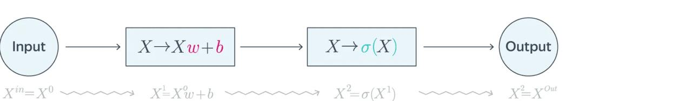
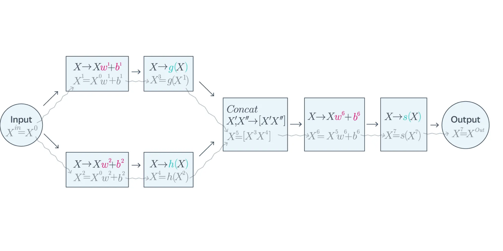
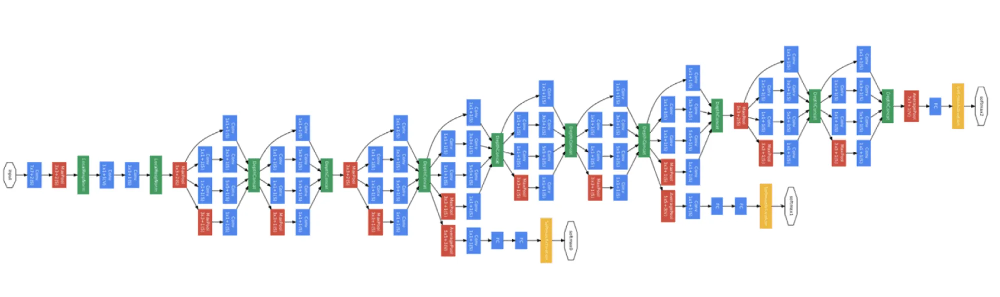
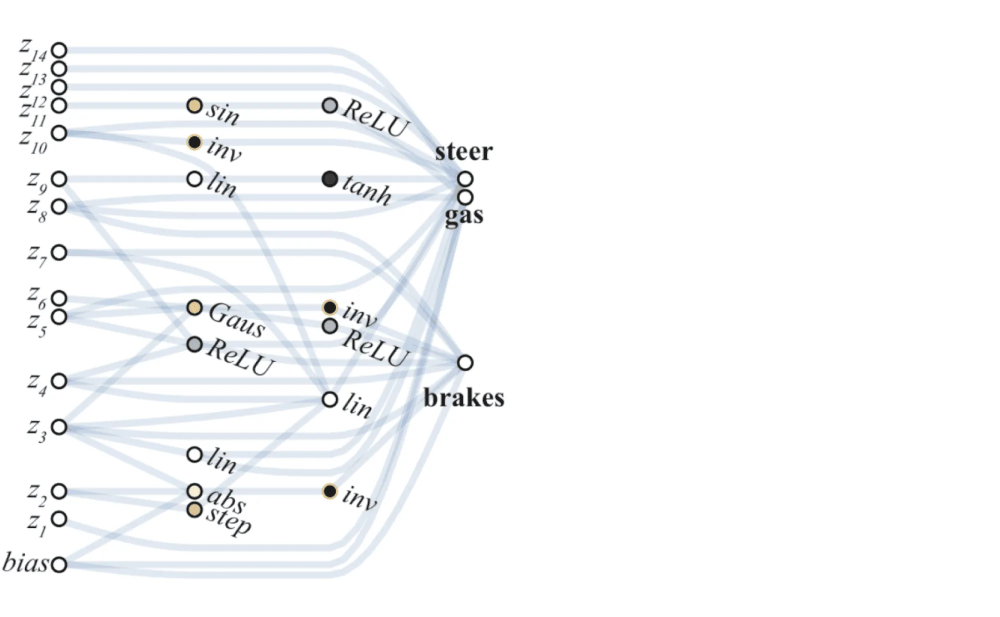
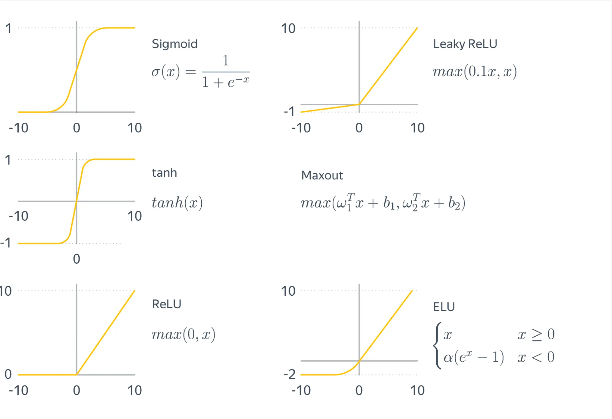
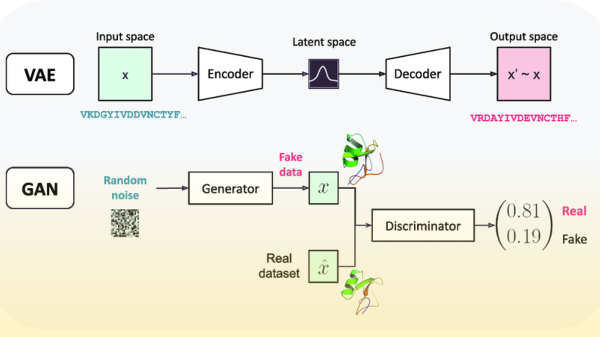
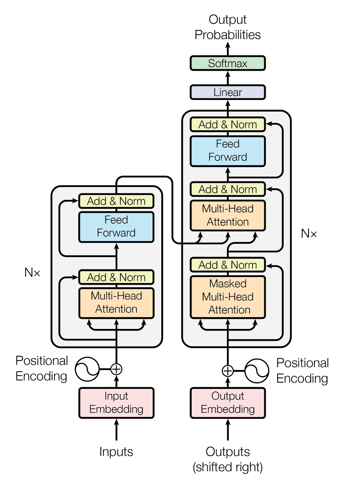
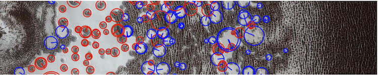
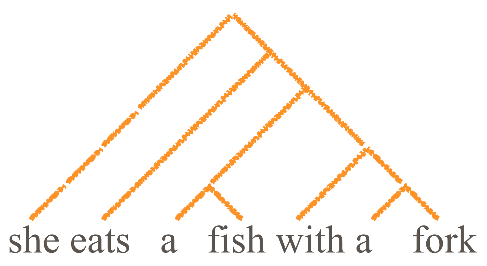

Exploring the Tensorflow Playground
Yo deepen your understanding of how neural networks work, you've asked to investigate the TensorFlow Playground—an interactive visualisation tool that allows you to experiment with small neural networks directly in your browser. Your goal is to explore how different configurations of neural networks affect their ability to learn and solve classification problems.
Open the TensorFlow Playground:
Go to TensorFlow Playground in your web
browser.
Task 1: Build a Simple Neural Network
- Start with the default dataset (two circles) and network settings.
- Use one hidden layer with one neuron to classify the points.
- Observe the decision boundary and how the network performs.
Task 2: Add More Neurons
- Increase the number of neurons in the hidden layer to three neurons.
- Observe the changes in the decision boundary and how well the network classifies the data.
- How does the performance change with more neurons?
Task 3: Add More Layers
- Add a second hidden layer with two neurons.
- Compare the performance to the previous network with just one hidden layer. How does adding more layers affect the learning?
Submission:
Take a screenshot of each configuration (one neuron, three neurons, two layers). Briefly describe (2-3
sentences) how each change affected the decision boundary and model performance.
After trying out tensorflow playground, now it is time for doing a bit more complex task. This will be useful in gaining an intuitive understanding of how machine learning models work.
Task 1: Investigate Different Datasets
- Change the dataset to "Spirals" using the dropdown menu.
- Experiment with different network architectures to successfully classify the data:
- Start with one hidden layer and four neurons.
- Gradually increase the number of neurons and layers until the network correctly classifies the spirals.
- What is the minimum number of layers and neurons needed to classify the spirals accurately?
Task 2: Adjusting Activation Functions and Learning Rate
- Change the activation function from "ReLU" to "tanh" and observe how it affects the network's ability to learn.
- Now, adjust the learning rate slider and observe how different learning rates (e.g., 0.01, 0.1, 3) impact the training speed and model accuracy.
Task 3: Experiment with Regularization
- Add L2 regularization to your network and observe how it impacts the decision boundary and prevents overfitting.
- Try increasing the regularization strength to see its effects on training.
Submission:
Share screenshots of your experiments with the "Spirals" dataset and different network configurations.
Briefly describe (2-3 sentences) how changing the activation function, learning rate, and regularization
influenced the network's performance.
Introduction to Neural Networks
In this part, you will be introduced to neural networks—a family of models that, since 2012, have steadily achieved dominance in new applications, becoming the de facto standard in many fields.
Neural networks were first conceptualized in the 1970s. However, the technical capabilities and understanding required to train large-scale neural networks only emerged around 2011, providing a significant boost to their development. The collective set of neural network approaches and the broader scientific study of them is referred to as deep learning.
Deep learning is based on two key ideas:
- End-to-End Learning: Traditionally, machine learning solutions involved complex pipelines where each component was trained separately to solve part of a problem. Deep learning, however, enables training the entire system as a single entity, allowing all layers to be optimized together rather than stacking separate models on top of one another.
- Representation Learning: This approach automates the extraction of informative features that account for data structure, often leveraging unstructured or unlabeled data. Instead of relying on human experts to engineer features, deep learning models can learn them directly from raw data—sometimes even utilizing vast external data sources, such as all the texts on the internet.
Despite their flexibility, modern deep learning models are highly complex and bear little resemblance to their elegant predecessors from 2012. The evolution of neural networks has been driven by industrial demands, advances in computational power, and the increasing availability of large-scale datasets.
At the same time, theoretical understanding often struggles to keep pace with practical advancements. Many deep learning methods rely on empirical experimentation rather than rigorous mathematical proofs. The field is filled with engineering heuristics—ideas that work in practice but lack formal justification beyond the phrase: "it works this way, but not the other way." This has led to skepticism among some researchers.
Despite theoretical uncertainties, the results achieved with neural networks over the past decade are remarkable and impossible to ignore. Particularly impressive progress has been made in analyzing data with inherent structure, such as:
- Natural Language Processing (NLP): Language models, text classification, and translation.
- Computer Vision: Object detection, image recognition, and generative models.
- Audio and Speech Processing: Speech recognition and synthesis.
- Graph-Based Learning: Applications in recommendation systems, fraud detection, and social network analysis.
As neural networks continue to evolve, the scientific community is also developing theoretical frameworks to better understand their remarkable capabilities. In a later section, we will explore these theoretical perspectives in detail.
Introduction to Fully Connected Neural Networks
An artificial neural network (ANN) is a complex differentiable function that maps input features to output predictions. All parameters in a neural network can be tuned simultaneously and interdependently, allowing the network to be trained in an end-to-end manner.
In most cases, a neural network consists of a sequence of differentiable parametric transformations. This structure enables learning powerful representations of data, improving performance in tasks such as classification, regression, and generative modeling.
A careful observer might notice that this definition also applies to logistic regression and linear regression. This is a valid observation—both of these models can be considered simple neural networks that map input features to predictions or logits.
Neural networks are best understood as compositions of simpler transformations. They are typically constructed from modular components (layers) that stack together to form deeper and more expressive models. The two fundamental building blocks of neural networks are:
-
Linear Layer (Dense Layer): A linear transformation applied to input data. This layer consists of learnable parameters—a weight matrix
Wand a bias vectorb:x ↦ xW + b, whereW ∈ ℝd×k,x ∈ ℝd, andb ∈ ℝk.This transformation maps a
d-dimensional input vector to ak-dimensional output. -
Activation Function: A nonlinear function applied element-wise to the output of a layer. Activation functions introduce non-linearity, allowing neural networks to learn more complex patterns. Common activation functions include:
- ReLU (Rectified Linear Unit):
ReLU(x) = max(0, x) - Sigmoid Function:
σ(x) = 1 / (1 + e-x)
Activation functions enable neural networks to generate more informative feature representations. We will explore different types of activation functions and their properties in a later section.
- ReLU (Rectified Linear Unit):
Even the most complex neural networks are composed of relatively simple blocks, such as linear transformations and activation functions. This modular nature allows them to be represented as a computational graph, where intermediate nodes correspond to transformations.

The image above illustrates the computational graph for logistic regression. More complex neural networks follow a similar structure but involve deeper stacks of transformations.
Doesn't this structure resemble a layered cake of transformations? This is why they are called layers.
Computational graphs can be even more complex, including nonlinear connections between layers:

Let's break down what happens in a fully connected neural network.
Input refers to the data fed into the neural network. Typically, inputs are structured as a matrix ("objects-features") or a tensor (a multi-dimensional array). In some cases, a network may have multiple inputs. For example, if a neural network processes an image along with additional metadata, these inputs may be handled differently, making it logical to define multiple entry points in the computational graph.
The input data X0 is then processed through two linear layers, generating intermediate (hidden) representations X1 and X2. These are also referred to as activations in the literature (not to be confused with activation functions).
Each of these representations, X1 and X2, undergoes a nonlinear transformation, producing new intermediate representations, X3 and X4. The transition from X0 to these new matrices (or tensors) can be viewed as generating more informative feature representations of the original data.
The representations X3 and X4 are then concatenated, meaning the feature representations for all objects are combined.
Next, another linear layer and an additional activation function are applied. The final result is passed to the output layer, which delivers the network's prediction to the user.
Unfortunately, there is no universally agreed-upon terminology in the literature.
For example, we could define a single indivisible layer as the combination of a linear layer and an activation function—since we almost never use a purely linear layer without non-linearity. In fact, in frameworks like Keras, activation functions can be specified directly as a parameter within a linear layer.
Additionally, some sources refer to what we call intermediate representations as layers. However, we believe that intermediate results Xi are better described as representations because they constitute new feature descriptions of the original input objects.
Furthermore, in all major neural network frameworks, layers are defined as transformations rather than stored representations. For this reason, we consider layers to be the transformations that link intermediate representations.
Real-World Example: GoogLeNet (Inception-v1)
Here is a real-life example of a complex neural network. GoogLeNet (also known as Inception-v1) achieved state-of-the-art (SotA) results in the ILSVRC 2014 ImageNet challenge.

In the diagram above, each block represents a relatively simple transformation, while the white blocks indicate the inputs and outputs of the computational graph.
Modern neural networks have grown even more complex, but they are still composed of relatively simple building blocks—just like GoogLeNet.
Note: In general, a neural network can be thought of as a complex function—or equivalently, a computational graph. In some highly non-trivial cases, breaking it down into layers may not make sense.
One such example is weight-agnostic neural networks (WANN), introduced in the paper Weight Agnostic Neural Networks, NeurIPS 2019.

The illustration above shows the structure of WANNs, which challenge the traditional assumption that neural networks require weight tuning to perform well.
A neural network composed exclusively of linear layers and activation functions is called a fully connected neural network or a multilayer perceptron (MLP). Lets talk more about the perceptrone and multilayer perceptron.
Feedforward Networks
The simplest kind of ANNs from the point of view of their theoretical analysis are feedforward networks. Often the network architecture is composed of layers. The input layer consists of neurons that get their inputs directly from the data. So for example, in an image recognition task, the input layer would use the pixel values of the input image as the inputs of the input layer. The network typically also has hidden layers that use the other neurons' outputs as their input, and whose output is used as the input to other layers of neurons. Finally, the output layer produces the output of the whole network. All the neurons on a given layer get inputs from neurons on only a single (lower) layer.
We will return to multilayer networks in a little while, but first we'll study the simplest possible neural "network" which consists of a single neuron.
Perceptron: The Mother of all ANNs
A perceptron is a feedforward neural network that consists of a single basic neuron. It was among the very first formal models of neural computation and because of its fundamental role in the history of neural networks, it wouldn't be unfair to call it the "Mother of all Artificial Neural Networks". It can be used as a simple classifier in binary classification tasks. A classic neural network method is the Perceptron algorithm, introduced by Rosenblatt in 1957, which can be used to train a perceptron.
The perceptron neuron is simply the above basic neuron model with the step function as the activation function.
In the Perceptron algorithm, for which pseudocode is given below, each misclassification leads to an update in the parameter vector w. If the predicted output of the neuron is 1 when the correct class is y=–1, then the input vector x is subtracted from the weight vector. Similarly, if the predicted output is –1 when the correct class is y=1, then the input vector x is added to the weight vector. (Recall that vector subtraction and addition simply means the element-wise subtraction or addition of the two vectors.)
perceptron(data):
1: w = [0, ...,0] # array of size p
2: while error(data, w) > 0:
3: (x,y) = choose_random_item(data)
4: z = w[0]x[0] + ... + w[p-1]x[p-1]
5: if z ≥ 0 and y = -1: # -1 classified as 1
6: w = w − x # subtract vector x
7: if z < 0 and y = 1: # 1 classified as -1
8: w = w + x # add vector x
9: return(w)
In practice, it is impractical to choose random training data points on line 3 of the algorithm because this may lead to choosing correctly labeled examples most of the time, which is a waste of time since they lead to no updates in the weights. Instead, a better method is to iterate through the training data and as soon as a misclassified item is found, do the required update.
It can be theoretically proven that if the data is linearly separable, then the algorithm is guaranteed to stop after a finite number of steps and produce a weigth vector that correctly classifies all the training instances.
Use the Perceptron template on TMC. (You'll find the necessary data files in the TMC template.)
The file mnist-x.data contains 6000 images from the popular
MNIST dataset, each
of which is given on a single line in the file. Each image consists
of 28 × 28 pixels listed row-by-row, so each line in the file
contains 784 values. Each pixel is either black (–1) or white
(1). The file
mnist-y.data contains the correct class value (0-9) of each
of the 6000 images.
Use the first 5000 images as training data and the last 1000 as test data.
-
Implement the perceptron algorithm in the
Perceptronclass. -
Modify the
train()method in classPerceptronso that it learns to distinguish number 3 from number 5. (Notice that the variabletargetCharcan be set to be one of these classes whileoppositeCharshould be the other. This will set the class label as 1 and –1 as is required in the Perceptron algorithm. Images representing other numbers are ignored.) Try to get a classification error around 5–15 %. - Try other pairs of number than 3 vs 5. Which numbers are easiest to classify and which are the hardest?
Now implement a nearest neighbor classifier for the MNIST data used in the Perceptron exercise.
Recall that unlike the Perceptron, or most other classifiers, the nearest neighbor classifier doesn't really involve a training stage. All the action happens in the classification (testing) stage. This style of methods are sometimes called "lazy learning": thou shalt not let it be your inspiration in real life!
Test your classifier using the same train/test split (5000/1000) as before. You can use the same pairs of numbers (3 vs 5), or even try classifying all the classes at the same time because the NN classifier is not restricted to binary classification. (Note that in multiclass classification, the expected accuracy tends to be lower than in binary classification simply because the problem is harder.)
Multilayer perceptrons
The main problem with the Perceptron algorithm is the assumption that the data are linearly separable. In practice, this tends not to be the case, and various variants of the algorithm have been proposed to deal with this issue. Two main directions are:
- Applying a non-linear transformation on the original input data may produce a representation where the data are linearly separable. The so called "kernel trick" leads to a class of methods known collectively as kernel methods, among which the support vector machine (SVM) is the best known.
- The model can be extended by coupling a number of basic neurons together to obtain neural networks that can represent complex, non-linear decision boundaries. A classical example of this is the multilayer perceptron (MLP).
An illustration showing that the second option leads to non-linear decision boundaries is given by the following video:
- Vimeo: Two Spirals Problem
Optimizing the weights of a multilayer perceptron is much harder than optimizing the weigths of a single perceptron neuron. The second coming of neural networks in the late 1980s was largely due to the difficulties faced by the then prevailing logic-based approach (so called expert systems) but also due to the invention of the backpropagation algorithm in the 1970s-1980s.
The path(s) leading to the backpropagation algorithm are rather long and winding. An interesting part of the history is related to the CS department of the University of Helsinki. About three years after the founding of the department in 1967, a Master's thesis was written by a student called Seppo Linnainmaa. The topic of the thesis was "Cumulative rounding error of algorithms as a Taylor approximation of individual rounding errors" (the thesis was written in Finnish, so this is a translation of the actual title "Algoritmin kumulatiivinen pyöristysvirhe yksittäisten pyöristysvirheiden Taylor-kehitelmänä").
The automatic differentiation method developed in the thesis was later applied by other researchers to quantify the sensitivity of the output of a multilayer neural network with respect to the individual weights, which is the key idea in backpropagation.
After its discovery, the Perceptron algorithm received a lot of attention, not least because of optimistic statements made by its inventor, Frank Rosenblatt. A classic example of AI hyperbole is a New York Times article published on July 8th, 1958:
The history of the debate that eventually lead to almost complete abandoning of the neural network approach in the 1960s for more than two decades is extremely fascinating. The article "A Sociological Study of the Official History of the Perceptrons Controversy" by Mikel Olazaran (Social Studies of Science, 1996) reviews the events from a sociology of science point of view. Reading it today is quite thought provoking -- and slightly chilling. Take for example a September 29th 2017 article in the MIT Technology Review, where Jordan Jacobs, co-founder of a multimillion dollar Vector institute for AI compares Geoffrey Hinton (a figure-head of the current deep learning boom) to Einstein because of his contributions to the discovery of the power of the backpropagation algorithm in the 1980s and later.The Navy revealed the embryo of an electronic computer today that it expects will be able to walk, talk, see, reproduce itself and be conscious of its existence. Later perceptrons will be able to recognize people and call out their names and instantly translate speech in one language to speech and writing in another language, it was predicted.
According to Hinton and Jacobs, we are on the brink of the final breakthrough. Sound familiar?
Please note that neural network enthusiasts are not at all the only ones inclined towards optimism. The rise and fall of the logic-based "expert systems" approach to AI had all the same hallmark features of an AI-hype, including promising results in restricted domains, gullible journalists, clueless investors in their cabinets, and too much speed to notice how "minor obstacles" were piling up and becoming big problems. The outcome both in the early 1960s and late 1980s was a collapse in the research funding, "AI Winter".
The learning objectives related to neural networks are on a relatively high level: you should understand the basic idea (the learning method and the activation principle) in feedforward networks. You should also learn what types of applications they are good for. An exception is the perceptron classifier, which you should study in more detail -- that's why there is an exercise about it.
Forward & Backward Propagation
Information in a neural network can flow in two directions.
The process of applying a neural network to data—computing the output for a given input—is called forward propagation (or forward pass). During this stage, the input representation is transformed into the target representation, with intermediate (hidden) representations sequentially constructed by applying layers to previous representations. This sequential nature is why the process is called "forward" propagation.
Backward propagation (or backward pass) is the process in which information (typically the prediction error of the target representation) moves in reverse—from the final layer (or even the loss function) back to the input through all transformations.
The backpropagation mechanism plays a fundamental role in training neural networks, enabling gradient-based optimization by propagating error signals backward through the computational graph.
Popular Activation Functions
At first glance, it might seem possible to stack multiple linear layers in sequence without any additional modifications. However, this approach is ineffective because after each linear layer, an activation function must be applied. But why?
Let's analyze a neural network with two consecutive linear layers. What happens if no non-linear activation function is placed between them?
y = Xout = X1W2 + b2 = (X0W1 + b1)W2 + b2
= X0W1W2 + b1W2 + b2
= X0W' + b'
The composition of two linear transformations results in another linear transformation. In other words, stacking two linear layers without an activation function is mathematically equivalent to using a single linear layer.
Adding an activation function after each linear layer introduces non-linearity into the transformation, resolving this issue. Furthermore, selecting the right activation function ensures that the transformation has desirable properties, such as stability and smooth gradient flow.
The following are some of the most commonly used activation functions:
-
Sigmoid (Logistic Function):
σ(x) = 1 / (1 + exp(-x))The sigmoid function maps input values to the range (0, 1), making it useful for binary classification tasks.
-
ReLU (Rectified Linear Unit):
ReLU(x) = max(0, x)ReLU is widely used due to its simplicity and effectiveness in reducing the vanishing gradient problem.

Exploring the Tensorflow Playground
Yo deepen your understanding of how neural networks work, you've asked to investigate the TensorFlow Playground—an interactive visualisation tool that allows you to experiment with small neural networks directly in your browser. Your goal is to explore how different configurations of neural networks affect their ability to learn and solve classification problems.
Open the TensorFlow Playground:
Go to TensorFlow Playground in your web
browser.
Task 1: Build a Simple Neural Network
- Start with the default dataset (two circles) and network settings.
- Use one hidden layer with one neuron to classify the points.
- Observe the decision boundary and how the network performs.
Task 2: Add More Neurons
- Increase the number of neurons in the hidden layer to three neurons.
- Observe the changes in the decision boundary and how well the network classifies the data.
- How does the performance change with more neurons?
Task 3: Add More Layers
- Add a second hidden layer with two neurons.
- Compare the performance to the previous network with just one hidden layer. How does adding more layers affect the learning?
Submission:
Take a screenshot of each configuration (one neuron, three neurons, two layers). Briefly describe (2-3
sentences) how each change affected the decision boundary and model performance.
After trying out tensorflow playground, now it is time for doing a bit more complex task. This will be useful in gaining an intuitive understanding of how machine learning models work.
Task 1: Investigate Different Datasets
- Change the dataset to "Spirals" using the dropdown menu.
- Experiment with different network architectures to successfully classify the data:
- Start with one hidden layer and four neurons.
- Gradually increase the number of neurons and layers until the network correctly classifies the spirals.
- What is the minimum number of layers and neurons needed to classify the spirals accurately?
Task 2: Adjusting Activation Functions and Learning Rate
- Change the activation function from "ReLU" to "tanh" and observe how it affects the network's ability to learn.
- Now, adjust the learning rate slider and observe how different learning rates (e.g., 0.01, 0.1, 3) impact the training speed and model accuracy.
Task 3: Experiment with Regularization
- Add L2 regularization to your network and observe how it impacts the decision boundary and prevents overfitting.
- Try increasing the regularization strength to see its effects on training.
Submission:
Share screenshots of your experiments with the "Spirals" dataset and different network configurations.
Briefly describe (2-3 sentences) how changing the activation function, learning rate, and regularization
influenced the network's performance.
Previous year content below!
Neural Networks
Our next topic tends to attract more interest than many of the other topics on this course. Perhaps it is the hope to understand out own mind, which emerges from neural processing in our brain, that makes neural networks so interesting.
What is so Special about Neural Networks?
The case for neural networks as an approach to AI is based on a similar argument as that for logic-based approaches. In the latter case, it was (or is) thought that in order to achieve human-level intelligence, we need to simulate higher-level thought processes, and in particular, manipulation of symbols representing certain concrete or abstract concepts using logical rules. The argument for neural computation is that by simulating the lower-level, subsymblic data processing on the level of neurons and neural networks, intelligence will emerge.
Neural computation can even be thought to be an alternative to the conventional model of computation based on Turing machines. The main distinguishing features of neural computation compared to conventional computing are:
- parallelism: many neurons act simultaneously
- stochasticity: the behavior of neurons cannot be predicted in a deterministic fashion -- the same input can lead to different outputs
- massive scale: neural networks can involve hundreds of billions (1011) connections -- which is still 10000 times less than the estimated number of connections in the brain, 1015
- adaptivity: the connections have an inherent tendency to adapt over time
Artificial neural networks (ANNs) mimic natural neural networks by copying the basic idea of a connected system including a large number of simple processor units (neurons), where processing is carried out by transmitting signals between the neurons. However, the internal mechanism of the neurons is usually ignored and the artificial neurons are often much simpler than their natural counterparts. Likewise, the eletro-chemical signalling mechanisms between natural neurons are mostly ignored in the design of ANNs.
There are attempts to simulate natural neural networks. The BRAIN Initiative led by American neuroscience researchers is pushing forward technologies for imaging, modeling, and simulating the brain at a finer and larger scale than before. Some brain research projects are very ambitious in terms of objectives. The Human Brain Project promised about 5 years ago that “the mysteries of the mind can be solved - soon”. After years of work, the Human Brain Project was facing questions about when the billion euros invested by the European Union and a consortium of industry partners will deliver what was promised, even though, to be fair, some less ambitious milestones have been achieved.
Most of the time, however, the goal is not to simulate a natural neural network but to implement AI and machine learning solutions. To build working solutions, it is not essential to replicate the details. In practice, we usually build ANNs that differ from natural neural networks in at least the following ways:
- computation in ANNs usually synchronous: all neurons complete their computation cycle before the proceeding to the next iteration, whereas natural systems tend to be asynchronous
- signaling in ANNs is usually continuous-valued as opposed to the binary (on/off or fire/don't fire) signals between natural neurons
- natural neural networks exhibit complex feedback loops -- only specialized ANNs known as recurrent networks have this feature (see below)
- ANNs are often much smaller in scale than natural nervous systems
Logistic Regression: The Foundation of Neural Networks
Logistic Regression is a statistical method traditionally used for binary classification tasks, where the objective is to categorize instances into one of two classes. Unlike linear regression, which predicts continuous outcomes, logistic regression models the probability of an outcome belonging to a particular class. This is achieved through the sigmoid function, which maps real-valued inputs to a range between 0 and 1:
P(y=1|x) = 1 / (1 + e−(β0 + β1x))
In this equation, β0 and β1 represent the model parameters, while e denotes the base of the natural logarithm. Logistic regression outputs a probability score, and a threshold (commonly 0.5) is used to assign a final class label. This makes logistic regression ideal for tasks such as spam detection, disease prediction, and customer segmentation.
Why Logistic Regression is Important for Neural Networks: Logistic regression can be viewed as a simple neural network with no hidden layers, where the sigmoid function serves as the activation function for the output layer. This connection between logistic regression and neural networks highlights the transition from single-layer models to more sophisticated structures. By adding hidden layers, neural networks evolve from a simple logistic regression model into a multi-layered framework capable of learning complex, non-linear decision boundaries.
From Logistic Regression to Multi-Layer Neural Networks
Building on logistic regression, neural networks expand the model’s ability to capture intricate patterns by incorporating multiple layers of interconnected nodes, or neurons. In a neural network, each neuron in one layer connects to neurons in the next, passing information through activation functions like the sigmoid function used in logistic regression. With each added layer, the model’s capacity to learn complex representations increases, allowing it to solve more challenging problems than a single-layer logistic regression model can.
Thus, logistic regression serves as a stepping stone into neural networks, especially in binary classification tasks. By stacking layers and introducing various activation functions, neural networks transform simple logistic regression into a powerful, flexible model that can tackle multi-class classification, image recognition, natural language processing, and more.
Weights, Activation and Adaptation
The basic artificial neuron model involves a set of adaptive
parameters, called weights. These weights are used as
multipliers on the inputs of the neuron. We denote the
weighted sum of the inputs as:
z = Σj=1,...,n wj xj,
where n is the number of inputs. The weights are
real-valued, and the inputs can be either binary or real-values.
The output of the neuron is obtained by applying an activation function on the weighted sum z. Typical examples is the activation function include:
- step function: f(z) = –1, if z < 0, and 1 otherwise
- sigmoid function: f(z) = 1/(1+e–z)
The output of a neuron can then act as the input of other neurons, whose outputs can be the input to yet other neurons, etc. The output of the whole network is obtained as the output of a certain subset of the neurons, which are called the output layer, although not all neural architectures can be divided in such a way.
Learning or adaptation in the network occurs when the weights are adjusted so as to make the network produce the correct ouputs. Optimizing the weights manually is out of the question and learning ANNs is a machine learning problem. Even as a machine learning problem, the optimization problems in ANNs are among the hardest.
In the following, we will study three different kinds of neural networks:
- feedforward networks, where the information always flows in one diretion (from an input layer toward an output layer)
- recurrent networks, which include feedback loops
- the self-organizing map
Feedforward Networks
The simplest kind of ANNs from the point of view of their theoretical analysis are feedforward networks. Often the network architecture is composed of layers. The input layer consists of neurons that get their inputs directly from the data. So for example, in an image recognition task, the input layer would use the pixel values of the input image as the inputs of the input layer. The network typically also has hidden layers that use the other neurons' outputs as their input, and whose output is used as the input to other layers of neurons. Finally, the output layer produces the output of the whole network. All the neurons on a given layer get inputs from neurons on only a single (lower) layer.
We will return to multilayer networks in a little while, but first we'll study the simplest possible neural "network" which consists of a single neuron.
Perceptron: The Mother of all ANNs
A perceptron is a feedforward neural network that consists of a single basic neuron. It was among the very first formal models of neural computation and because of its fundamental role in the history of neural networks, it wouldn't be unfair to call it the "Mother of all Artificial Neural Networks". It can be used as a simple classifier in binary classification tasks. A classic neural network method is the Perceptron algorithm, introduced by Rosenblatt in 1957, which can be used to train a perceptron.
The perceptron neuron is simply the above basic neuron model with the step function as the activation function.
In the Perceptron algorithm, for which pseudocode is given below, each misclassification leads to an update in the parameter vector w. If the predicted output of the neuron is 1 when the correct class is y=–1, then the input vector x is subtracted from the weight vector. Similarly, if the predicted output is –1 when the correct class is y=1, then the input vector x is added to the weight vector. (Recall that vector subtraction and addition simply means the element-wise subtraction or addition of the two vectors.)
perceptron(data):
1: w = [0, ...,0] # array of size p
2: while error(data, w) > 0:
3: (x,y) = choose_random_item(data)
4: z = w[0]x[0] + ... + w[p-1]x[p-1]
5: if z ≥ 0 and y = -1: # -1 classified as 1
6: w = w − x # subtract vector x
7: if z < 0 and y = 1: # 1 classified as -1
8: w = w + x # add vector x
9: return(w)
In practice, it is impractical to choose random training data points on line 3 of the algorithm because this may lead to choosing correctly labeled examples most of the time, which is a waste of time since they lead to no updates in the weights. Instead, a better method is to iterate through the training data and as soon as a misclassified item is found, do the required update.
It can be theoretically proven that if the data is linearly separable, then the algorithm is guaranteed to stop after a finite number of steps and produce a weigth vector that correctly classifies all the training instances.
Use the Perceptron template on TMC. (You'll find the necessary data files in the TMC template.)
The file mnist-x.data contains 6000 images from the popular
MNIST dataset, each
of which is given on a single line in the file. Each image consists
of 28 × 28 pixels listed row-by-row, so each line in the file
contains 784 values. Each pixel is either black (–1) or white
(1). The file
mnist-y.data contains the correct class value (0-9) of each
of the 6000 images.
Use the first 5000 images as training data and the last 1000 as test data.
-
Implement the perceptron algorithm in the
Perceptronclass. -
Modify the
train()method in classPerceptronso that it learns to distinguish number 3 from number 5. (Notice that the variabletargetCharcan be set to be one of these classes whileoppositeCharshould be the other. This will set the class label as 1 and –1 as is required in the Perceptron algorithm. Images representing other numbers are ignored.) Try to get a classification error around 5–15 %. - Try other pairs of number than 3 vs 5. Which numbers are easiest to classify and which are the hardest?
Now implement a nearest neighbor classifier for the MNIST data used in the Perceptron exercise.
Recall that unlike the Perceptron, or most other classifiers, the nearest neighbor classifier doesn't really involve a training stage. All the action happens in the classification (testing) stage. This style of methods are sometimes called "lazy learning": thou shalt not let it be your inspiration in real life!
Test your classifier using the same train/test split (5000/1000) as before. You can use the same pairs of numbers (3 vs 5), or even try classifying all the classes at the same time because the NN classifier is not restricted to binary classification. (Note that in multiclass classification, the expected accuracy tends to be lower than in binary classification simply because the problem is harder.)
Multilayer perceptrons
The main problem with the Perceptron algorithm is the assumption that the data are linearly separable. In practice, this tends not to be the case, and various variants of the algorithm have been proposed to deal with this issue. Two main directions are:
- Applying a non-linear transformation on the original input data may produce a representation where the data are linearly separable. The so called "kernel trick" leads to a class of methods known collectively as kernel methods, among which the support vector machine (SVM) is the best known.
- The model can be extended by coupling a number of basic neurons together to obtain neural networks that can represent complex, non-linear decision boundaries. A classical example of this is the multilayer perceptron (MLP).
An illustration showing that the second option leads to non-linear decision boundaries is given by the following video:
- Vimeo: Two Spirals Problem
Optimizing the weights of a multilayer perceptron is much harder than optimizing the weigths of a single perceptron neuron. The second coming of neural networks in the late 1980s was largely due to the difficulties faced by the then prevailing logic-based approach (so called expert systems) but also due to the invention of the backpropagation algorithm in the 1970s-1980s.
The path(s) leading to the backpropagation algorithm are rather long and winding. An interesting part of the history is related to the CS department of the University of Helsinki. About three years after the founding of the department in 1967, a Master's thesis was written by a student called Seppo Linnainmaa. The topic of the thesis was "Cumulative rounding error of algorithms as a Taylor approximation of individual rounding errors" (the thesis was written in Finnish, so this is a translation of the actual title "Algoritmin kumulatiivinen pyöristysvirhe yksittäisten pyöristysvirheiden Taylor-kehitelmänä").
The automatic differentiation method developed in the thesis was later applied by other researchers to quantify the sensitivity of the output of a multilayer neural network with respect to the individual weights, which is the key idea in backpropagation.
After its discovery, the Perceptron algorithm received a lot of attention, not least because of optimistic statements made by its inventor, Frank Rosenblatt. A classic example of AI hyperbole is a New York Times article published on July 8th, 1958:
The history of the debate that eventually lead to almost complete abandoning of the neural network approach in the 1960s for more than two decades is extremely fascinating. The article "A Sociological Study of the Official History of the Perceptrons Controversy" by Mikel Olazaran (Social Studies of Science, 1996) reviews the events from a sociology of science point of view. Reading it today is quite thought provoking -- and slightly chilling. Take for example a September 29th 2017 article in the MIT Technology Review, where Jordan Jacobs, co-founder of a multimillion dollar Vector institute for AI compares Geoffrey Hinton (a figure-head of the current deep learning boom) to Einstein because of his contributions to the discovery of the power of the backpropagation algorithm in the 1980s and later.The Navy revealed the embryo of an electronic computer today that it expects will be able to walk, talk, see, reproduce itself and be conscious of its existence. Later perceptrons will be able to recognize people and call out their names and instantly translate speech in one language to speech and writing in another language, it was predicted.
According to Hinton and Jacobs, we are on the brink of the final breakthrough. Sound familiar?
Please note that neural network enthusiasts are not at all the only ones inclined towards optimism. The rise and fall of the logic-based "expert systems" approach to AI had all the same hallmark features of an AI-hype, including promising results in restricted domains, gullible journalists, clueless investors in their cabinets, and too much speed to notice how "minor obstacles" were piling up and becoming big problems. The outcome both in the early 1960s and late 1980s was a collapse in the research funding, "AI Winter".
The learning objectives related to neural networks are on a relatively high level: you should understand the basic idea (the learning method and the activation principle) in feedforward networks. You should also learn what types of applications they are good for. An exception is the perceptron classifier, which you should study in more detail -- that's why there is an exercise about it.
Digital Signal Processing
The topics of this week include two special kinds of data that require somewhat specific techniques: digital signals (such as audio or images), and natural language.
Even though we try to avoid mentioning the Terminator (because people think about it way too much when we say 'AI'), at this point of the course, it's probably safe to use it as an example of some signal processing tasks. You can watch this clip before and after this part in the course to see if you'll be able to recognize some familiar features in it:
| Theme | Objectives (after the course, you ...) |
| Digital Signal Processing |
|
| Natural language processing |
|
Digital signal representations
Digital image and audio signals represent recordings of natural signals in numerical form. For images, the values represent pixel intensities stored in a two-dimensional array. A third dimension can be used to store different bands for, e.g., red, green, and blue (RGB). We can also think of the values are functions of the x and y coordinates, F(x,y).
Fun fact (but not required for the exam): In the case of audio, the signal can be thought to be a signal of time, F(t), but other representations such as those that are functions of frequency, F(f), are commonly used. The frequency representation is particularly well suited for compact representation since frequency bands outside the audible range 20 Hz to 20 kHz can be left out without observable (to humans) effect.
Signal processing covers a wide variaty of different tasks and techniques. See the lecture slides for a number of examples of both audio and image/video processing tasks from ''photoshopping'' to face recognition.
Pattern recognition and invariant features in images
Pattern recognition is a good example of an AI problem involving digital signals. It means generally the problem is recognizing an object in a signal (typically an image). The task is made hard because signals tend to vary greatly depending on external conditions such as camera angle, distance, lighting conditions, echo, noise, and differences between recording devices. Therefore the signal is practically always different even if it is from the same object.
Based on these facts, an essential requirement for successful pattern recognition is the extraction of invariant features in the signal. Such features are insensitive (or as insensitive as possible) to variation in the external conditions, and tend to be similar in recordings of the same object. In the lecture slides there is a famous photograph of an Afghan girl by Steve McCurry. She was identified based on the unique patterns in the iris of the eye. Here the iris is the invariant feature, which remains unchanged when a person grows older even if their appearance may otherwise change. The iris is an example of invariance, and a metaphor for more general invariance with respect to external conditions.
More generally, the feature-based approach to image recognition attempts to identify features that are invariant with respect to (meaning: not affected too much by)
- scale, which depends on the distance between the camera and the object
- orientation, which depends on the angle of the object relative to the camera
- brightness, which depends on the lighting conditions and the camera settings (aperture and exposure time)
- efficiently
- identifiable
The starting point to construct such features will be a set of points of interest, each of which is located at specific x, y coordinates in the image. The above criteria, especially the requirement of identifiability, lead us to prefer points like corners and ''blobs'' (we won't define this in more detail): a point on a flat surface, on the other hand, would be a poor feature because its only identifiable characteristic is its color, which won't usually be specific enough to distinguish between features in objects of the same color.
Deep learning and computer vision
The latest trend in computer vision and other digital signal processing domains in AI is deep learning. We already briefly discussed the idea in deep learning in the previous part.
The main promise of deep learning for computer vision is the ability to sidestep the feature engineering step, so that we won't necessarily have to apply the feature-based approach descrived above at all. The deep neural network architecture is designed so that the first layers (the layers closest to the input data) automatically learn to extract useful features from raw pixel data. The next layers will gradually refine the features to obtain higher-level features. Finally, the last layers (the layers furthest from the input data) will solve the actual learning task, be it classification or regression or something else.
We didn't go into deep learning for image processing in this course, and it is not included in the learning objectives: don't expect a question about it in the exam. There are other courses like Advanced course in machine learning and Deep learning where you can learn more. You should also remember that you can apply for permission to take courses at Aalto University where they also have relevant courses.
Generative AI in Image Processing

Generative AI in image processing focuses on creating new images or enhancing existing ones by learning patterns from large datasets. Using techniques such as Generative Adversarial Networks (GANs) and Variational Autoencoders (VAEs), AI systems can generate high-quality images, reconstruct missing parts, and create entirely new visuals. These models have become instrumental in industries like entertainment, advertising, and healthcare, enabling tasks such as image synthesis, inpainting, and super-resolution.
Auto Regression (AR)
Auto Regression (AR) is a statistical modeling technique widely used in time series analysis to predict future values based on past observations of the same variable. The AR model assumes that the value of a variable at any given time depends linearly on its past values and a stochastic (random) error term. The general form of an AR model of order p (AR(p)) is:
yt = c + φ1yt-1 + φ2yt-2 + ... + φpyt-p + εt
Where:
- yt: The value of the time series at time t.
- c: A constant term.
- φi: The coefficients for past values (yt-i).
- p: The order of the model, indicating how many past values are used.
- εt: The error term, representing random noise.
Applications of Auto Regression
Auto Regression is used in various domains, including:
- Economic Forecasting: Predicting stock prices, GDP growth, or unemployment rates.
- Weather Modeling: Estimating temperature, rainfall, or other weather-related variables.
- Signal Processing: Analyzing trends in audio, communication, or seismic signals.
Assumptions of the AR Model
To effectively use AR models, the following assumptions should hold:
- The time series is stationary, meaning its statistical properties (mean, variance) do not change over time.
- The errors (εt) are independently and identically distributed (i.i.d.) with a mean of zero.
Choosing the Order (p)
The order of the AR model, p, can significantly impact its performance. It is typically chosen using methods like:
- Akaike Information Criterion (AIC): Balances model complexity and goodness of fit.
- Bayesian Information Criterion (BIC): Penalizes complexity more heavily than AIC.
- Partial Autocorrelation Function (PACF): Determines the most significant lags for the model.
Limitations
While AR models are powerful for stationary time series, they have limitations:
- Poor performance on non-stationary data unless transformed (e.g., through differencing).
- Limited to linear relationships and may not capture non-linear dynamics.
Extension to ARIMA
Auto Regression is a core component of more complex time series models like ARIMA (Auto Regressive Integrated Moving Average), which combines AR with moving averages and differencing to handle non-stationary data.
Overall, Auto Regression remains a foundational technique in time series analysis, providing a straightforward yet effective way to model and forecast data based on its own past behavior.
GAN
One of the most popular models for image generation. GANs are a type of generative model that can create new, synthetic data similar to a given dataset. In image generation, for example, GANs can produce realistic-looking images from random noise. GANs consist of two neural networks—the generator and the discriminator—working in opposition.
- The Generator: This network tries to generate realistic images from random noise.
- The Discriminator: This network tries to distinguish between real images (from the dataset) and fake images (generated by the generator).
The generator's goal is to fool the discriminator, while the discriminator's goal is to correctly classify images as real or fake. Over time, both networks improve: the generator gets better at creating realistic images, and the discriminator becomes more accurate at distinguishing real from fake images. This setup is called adversarial because the two networks are in competition, similar to a game. The generator tries to create realistic images, while the discriminator evaluates them against real images, gradually improving the generator's ability to produce highly realistic outputs.
VAE
These models work by compressing images into a latent space representation, allowing for smooth interpolation between images. VAEs are useful for generating new images and filling in missing data by sampling from this latent space.
Hands-On: GANs and VAEs
Generator: The generator will take a vector of random noise (a latent vector, usually of size 100) and generate a 28x28 image (since we are using the MNIST dataset).
Discriminator: The discriminator will take an image (either real or generated) and output a single scalar that represents whether the image is real (1) or fake (0).
Generator Architecture
- Latent Vector (z): Random noise vector (size 100).
- Output Image: A 28x28 grayscale image (MNIST size).
Code for the generator can be found here: Generator Code.
Discriminator Architecture
- Input Image: A 28x28 grayscale image.
- Output: A single value between 0 and 1 (real or fake).
Code for the discriminator can be found here: Discriminator Code.
Full code of training on the MNIST dataset can be accessed by the link: MNIST Training Code.
Further Reading:
- PyTorch GAN Tutorial
- Goodfellow et al.'s GAN Paper (Original)
- GAN Hacks by Soumith Chintala
- Understanding Variational Autoencoders by DeepMind
Transition from RNN-based Approaches to CNN-based
Historically, Recurrent Neural Networks (RNNs) were applied to sequential tasks, including image generation. However, RNNs struggled with scalability and capturing spatial hierarchies in image data. As a result, Convolutional Neural Networks (CNNs) became the dominant architecture for image-related tasks, particularly for tasks involving spatial relationships such as object detection and image classification.
CNNs are designed to process data with a grid-like topology (e.g., images). They employ convolutional layers that filter small regions of input data, capturing features such as edges, textures, and shapes. This enables CNNs to model spatial hierarchies efficiently, making them more effective for image processing compared to RNNs, which are better suited for sequential data (like text or time-series data).
The shift from RNN-based to CNN-based approaches in tasks like image recognition, object detection, and image generation was driven more by the scalability of CNNs and their higher degree of parallelization, rather than an inherent superiority. While both architectures can ultimately achieve similar outcomes, CNNs are generally easier to train and more efficient on large-scale datasets due to their ability to process data in parallel.
Transformers and Attention Mechanisms

The introduction of Transformers marked a breakthrough in deep learning, primarily due to their attention mechanisms, which enable models to focus on important parts of the input data simultaneously. Initially designed for Natural Language Processing (NLP), transformers are now being applied in computer vision as well, most notably through Vision Transformers (ViTs).
Self-Attention Mechanism
This is the core of the transformer architecture. Each input token (in NLP, a word; in images, a patch) can attend to every other token, allowing the model to capture long-range dependencies. In image processing, this means understanding relationships between distant regions of an image.
Multi-head Attention
By using multiple attention heads, transformers learn various relationships simultaneously, improving the model's ability to focus on different features of the image.
Transformers have outperformed traditional CNNs in certain vision tasks, especially those requiring understanding of global image contexts. This advancement improved such fields as image classification, object segmentation, and image generation.
Further Reading:
- "Attention is All You Need" (Original Transformer Paper by Vaswani et al.)
- Vision Transformers Explained (Google AI Blog)
- Vision Transformer Tutorial in PyTorch
- A Comprehensive Guide to Attention Mechanism
- PyTorch Attention Layer Tutorial
Latent Variable and Diffusion Models
Latent Variable Models are a class of generative models that introduce hidden variables to capture the underlying structure of the data. These models are often used to represent complex distributions in a simpler, compressed form, making them useful for generating data that resembles the training set.
Latent Variables
These are not directly observed but inferred from data. Variational Autoencoders (VAEs) use latent variables to represent the underlying data in a lower-dimensional space. This allows VAEs to generate new data samples by sampling from the latent space.
Diffusion Models
Diffusion Models are a newer class of generative models that represent data as a gradual transformation of noise into structured data. These models work by simulating a reverse diffusion process, starting with noise and iteratively refining it to produce clear and realistic outputs.
Diffusion Process
In this approach, data is corrupted by progressively adding noise, and the model learns to reverse this process to recover the original data. The iterative denoising allows for the generation of high-quality images from random noise.
Diffusion models are highly effective for image synthesis, denoising, and image inpainting, and they have become competitive alternatives to GANs in various image generation tasks.
Further Reading:
- Understanding Latent Variable Models (Stanford)
- Variational Autoencoder Demystified
- Diffusion Models by OpenAI
- Denoising Diffusion Probabilistic Models (Original Paper)
- Diffusion Models in PyTorch
As most diffusion models are quite big and difficult to run on local hardware, we will use open-source free diffusion models for image generation. As it turns out there are quite a lot of websites that host diffusion models that can generate any image given a texual prompt. Here is medium article about this. Though most of these websites have limited number of tries for generating images, we will use one that has unlimited use for learning purposes.
Open the Stable Diffusion 2.1 Demo from hugging face:
Go to Stable
Diffusion 2.1 Demo in your web
browser.
Task 1: Test out Image generation ability of the model.
- Start with the default example exercises at the bottom of the website.
- Change the
promptandnegative promptnext to the "Generate image" box. - Observe how it generates images.
Task 2: Use advanced settings.
- Change the "Guidance Scale" slider under "Advanced settings". (It goes up from 0 to 50)
- Observe how changing the "Guidance Scale" changes the results.
- Why does this happen? Find out the idea behind
promptandnegative promptin diffusion models.
Task 3: Generate realistic images of people holding things.
- Write this sentence to the
promptsection. "A person holding an apple in their hand." (Without the quotes). - Change the
negative promptand "Guidance Scale" however you see fit to create the most realistic looking picture possible. Try out at least 5 combinations. - Notice that for some reason, diffusion models are really bad at generating hands and fingers (For now, at least!). Try to find out why that is the case.
Submission:
Take a screenshot of each configuration of prompt and negative prompts with
the corresponding generated pictures (at least 5!). Write short answers to the questions provided above.
Add these in a file and show it to during the exercise session.
The model that we used above it severely underpowered and a bit old at this point. The newer diffuision models like DALL-E-3 or Midjourney 6.1 can already produce images that have already advanced from silly mistakes like weird hand positions. Now, we need to be more aware of the latest capabilities of these image generation models.
Task: Methods of identifying AI generated images.
- Try out DALL-E-3 model by writing this prompt in ChatGPT website. "Create an image of A person holding an apple in their hand." (Without the quotes)
- Observe the differences between the pictures generated by this model and the stable diffusion model that you tried on previous exercise.
- Try out different combinations of prompts(at least 5) just like the previous exercise in ChatGPT. Do these pictures still show the same level of artifacts and visible mistakes like the previously generated pictures?
Submission:
Search for ways to detect if a image has been created using generative AI. Try to find at least 3
articles about it from the internet. Write a small report (No more than 1 page) about the methods used
to detect AI generated images and how reliable they are. Add the articles you have read as reference.
Applications of Generative AI
Generative AI has a wide range of applications across multiple industries, driving innovation in content creation, design, and data generation. Some of the key applications include:
Art and Design
Generative AI helps create original artworks, music, and designs by leveraging algorithms to blend creativity with machine learning. Tools like DeepArt allow artists to use AI as a creative partner.
Medical Imaging
AI-generated synthetic medical images are used to augment training datasets for healthcare applications, improving diagnostic models while protecting patient privacy.
Gaming and Virtual Worlds
Procedurally generated game environments and characters are becoming more common, offering endless variations and creativity in gaming.
Marketing and Advertising
AI models generate personalized content such as tailored advertisements, social media posts, and product designs, enhancing customer engagement through personalized experiences.
Natural Language Processing
Language is another example of an area where AI has hard time considering how easy it feels to us, as humans, to understand natural scenes or language. This is probably in part because we don't appreciate the hardness of tasks that even a child can perform without much apparent practice. (Of course, a child actually practices these skills very intensively, and in fact, evolution has trained us for millions of years, preconditioning our "neural networks" to process information in this form.)
The features that make language distinctive and different from many other data sources for which we may apply AI techniques include:
- Even though language follows an obvious linear structure where a piece of text has a beginning and an end, and the words inbetween are in a given order, it also has hierarchical structures including, e.g., text–paragraph–sentence–word relations, where each sentence, for example, forms a separate unit.
- Grammar constrains the possible (allowed) expressions in natural languages but still leaves room for ambiguity (unlike formal languages such as programming languages which must be unambiguous).
- Compared to digital signals such as audio or image, natural language data is much closer to semantics: the idea of a chair has a direct correspondence with the word 'chair' but any particular image of a chair will necessarily carry plenty of additional information such as the color, size, material of the chair and even the lighting conditions, the camera angle, etc, which are completely independent of the chair itself.
Generative AI in NLP
Generative AI in Natural Language Processing (NLP) has changed how machines understand and generate human language. NLP tasks, such as text generation, summarization, translation, and conversation, have significantly improved with the introduction of deep learning models that can generate coherent and contextually appropriate language.
At the heart of this transformation are transformer-based models, such as GPT (Generative Pre-trained Transformer), which leverage massive datasets and powerful neural networks to create natural language outputs. By predicting the next word or phrase based on preceding text, these models are able to produce human-like language with impressive accuracy and fluency.
Key generative models in NLP include GPT, BERT, and T5, each of which has advanced specific NLP tasks. These models rely heavily on attention mechanisms and self-supervision (where the training data is created automatically from unlabeled text), making them highly scalable.
Brief History of GPT: From GPT-0
The Generative Pre-trained Transformer (GPT) series represents a breakthrough in language generation, with each iteration improving upon its predecessor in terms of scale, complexity, and performance. Here's a brief history of the evolution from GPT-0 to today's advanced models:
- GPT-0 (2018): The original GPT model was based on the transformer architecture introduced by Vaswani et al. in 2017. GPT-0 (also referred to as GPT-1) was trained on a large corpus of unsupervised text data and could generate text by predicting the next word in a sequence. It had approximately 110 million parameters, which made it significantly more powerful than earlier recurrent neural network (RNN) models. While impressive, GPT-0 had limitations in terms of contextual understanding and coherence over long texts.
- GPT-2 (2019): OpenAI introduced GPT-2, which scaled up the number of parameters to 1.5 billion, marking a significant jump in capability. GPT-2 could generate more coherent and contextually relevant paragraphs of text. Its ability to complete sentences and generate long-form content was a major improvement over GPT-0. However, concerns over the potential misuse of GPT-2 for disinformation led OpenAI to initially limit access to the full model.
- GPT-3 (2020): GPT-3 represented another massive leap in scale, with 175 billion parameters. Its capabilities in understanding and generating natural language far surpassed previous models. GPT-3 was able to perform a variety of tasks, including answering questions, translating languages, summarizing text, and even generating code—all from a single, pre-trained model. GPT-3 demonstrated the power of few-shot learning, where it could adapt to new tasks with minimal examples.
- GPT-4 (Expected 2023+): GPT-4 is expected to be even larger, more efficient, and more adept at solving complex tasks with fewer mistakes. GPT-4 will likely build on advancements in architecture, dataset size, and optimization techniques to push the boundaries of what language models can achieve.
Large Language Models (LLMs)
Large Language Models (LLMs), such as GPT-3 and beyond, have become a foundational tool in generative AI, thanks to their ability to process and generate natural language at an unprecedented scale. LLMs are pre-trained on vast corpora of text data, often drawn from books, websites, articles, and other sources. This pre-training allows these models to learn the statistical properties of language, enabling them to generate meaningful text and understand complex language patterns.
Key Characteristics of LLMs:
- Scale: LLMs like GPT-3 contain billions of parameters, making them capable of handling a wide range of NLP tasks with minimal fine-tuning. The sheer size of these models allows them to generalize well across tasks and domains.
- Pre-training and Fine-tuning: LLMs are pre-trained on general-purpose text data, which gives them broad language comprehension. They can be fine-tuned on specific tasks, such as sentiment analysis, summarization, or translation, by exposing them to smaller, task-specific datasets.
- Few-shot and Zero-shot Learning: One of the most remarkable capabilities of LLMs is their ability to perform few-shot or even zero-shot learning. In few-shot learning, the model can perform a task after seeing only a few examples. In zero-shot learning, the model can tackle a task without any specific training, relying solely on its pre-trained knowledge.
Applications:
- Chatbots and virtual assistants (e.g., OpenAI's ChatGPT, Microsoft's Cortana)
- Automated content generation for blogs, news articles, and social media posts
- Translation services, providing high-quality translations between multiple languages
- Code generation, where the model can write software code from natural language descriptions (e.g., GitHub's Copilot)
LLMs represent a significant step toward more general-purpose AI, capable of understanding and generating text across various contexts and industries. However, their scale also raises ethical and practical concerns, including bias, misinformation, and the environmental costs of training such large models.
Further Reading:
- GPT and Transformer-based Models: GPT-3 and Beyond by OpenAI
- The GPT-3 Paper (Language Models are Few-Shot Learners)
- A Visual Guide to GPT-3
- BERT: Pre-training of Deep Bidirectional Transformers
- T5: Exploring the Limits of Transfer Learning
- Hugging Face: Overview of Transformer Models
- GPT Implementation in Python: OpenAI GPT API Documentation
- Hugging Face GPT-2 Implementation in PyTorch
Exploring NanoGPT for Text Generation
In this section, you'll get hands-on experience running the LLM models you've been learning about. For this task, we'll use a custom, lightweight local LLM model that's small enough to run on a personal laptop (though you're welcome to try out larger models if you have the hardware!). This approach gives you a clearer understanding of how models like ChatGPT generate answers and highlights the significant computing cost associated with running them.
You've been approached by a group of colleagues in your AI research group who are investigating the performance and practicality of locally run GPT models. They're specifically interested in models that are fully transparent and understandable from a code perspective. To help with this, they've recommended using the NanoGPT repository by Andrej Karpathy, which is a small but complete GPT implementation, written from scratch. Your mission is to explore this model by running it locally on your machine and experimenting with it to better understand its capabilities.
- Clone the NanoGPT Repository: Follow the instructions on the NanoGPT GitHub repository to clone the code to your local machine.
- Run the Pre-trained Model: The repository comes with a small pre-trained GPT model on a Shakespearean dataset.
- Your task is to generate text samples using this pre-trained model. You can do this by running the provided script that generates text from the Shakespeare model.
Submission:
Share the generated text output from your run (minimum 100 characters).
Tips:
- Make sure you have all necessary dependencies installed, such as Python and PyTorch, as described in the repo.
- Fine-tuning might take time, so choose your dataset wisely for faster experimentation.
- Feel free to adjust the parameters during fine-tuning to see how the model's performance changes.
In the previous exercise you were introduced to NanoGPT and got a chance to get familiar with it. In this exercise, you will fine-tune the NanoGPT model with your own data.
- Prepare Your Own Text: Select a text dataset of your choice. It can be a personal collection of articles, blog posts, stories, or any form of coherent text (minimum 1,000 words).
- Fine-Tune the NanoGPT Model: Follow the instructions in the repository to fine-tune the GPT model using your own dataset. Adjust the hyperparameters, if necessary, to ensure that the model learns effectively from your data.
- Generate New Text with a Prompt: Once the model is fine-tuned, generate new text by providing a custom prompt related to your dataset.
Submission:
Submit the prompt you used and the new text generated by your fine-tuned model
(minimum 100 characters).
Tips:
- Make sure you have all necessary dependencies installed, such as Python and PyTorch, as described in the repo.
- Fine-tuning might take time, so choose your dataset wisely for faster experimentation.
- Feel free to adjust the parameters during fine-tuning to see how the model's performance changes.
Historical Section
To understand how we got to today's powerful AI methods, let's look back at some earlier techniques in pattern recognition for images and language processing. These approaches laid the groundwork for the AI models we now use.
- Image Pattern Recognition with SIFT and SURF: Before deep learning became popular, methods like SIFT (Scale-Invariant Feature Transform) and SURF (Speeded Up Robust Features) were widely used to identify features in images. These methods helped detect unique parts of an image that could be used to compare it to other images. For example, they could pick out edges, corners, and textures that stand out, making it possible to match similar images or recognize objects across different images. Even though CNNs (Convolutional Neural Networks) are now the go-to for image recognition, SIFT and SURF remain valuable tools for understanding why certain features are chosen during matching, which can be useful in certain applications.
- Natural Language Processing (NLP) with Formal Language Algorithms: In natural language processing, early methods relied on formal language algorithms, like the CYK (Cocke-Younger-Kasami) algorithm, to parse sentences and understand language structure. The CYK algorithm, for instance, helped break down sentences into their grammatical parts, giving insights into sentence structure and meaning. This approach, known as parsing, still influences the design of modern language models (LLMs) by helping these models understand syntax and grammar, even though the methods have evolved.
These foundational methods offered more interpretable results, which is helpful in understanding how patterns are identified. Although they have largely been replaced by newer techniques, their legacy lives on in modern AI, where transparency and interpretability are increasingly valued. In this section, we short description about these historical methods.
SIFT and SURF
Good examples of commonly used feature extraction techniques for image data include Scale-Invariant Feature Transform (SIFT) and Speeded-Up Robust Features (SURF). We take a closer look at the SURF technique. It can be broken into two or three stages:
- Choosing interest points: We identify a set of (x,y) points by maximizing the determinant of a so called Hessian matrix that characterizes the local intensity variation around the point. The interest points tend to be located at "blobs" in the image. (You are not required to decode the details of this -- a rough idea is enough.)
- Feature descriptors: The intensity variation around each interest point is described by a feature descriptor which is a 64-dimensional vector (array of 64 real values). In addition, the feature has a scale (size) and an orientation (dominant direction).
- Feature matching: If the problem is to match objects between two images, then both of the above tasks are performed on both images. We then find pairs of feature descriptors (one extracted from image A and the other from image B) that are sufficiently close to each other in Euclidean distance.

Above is an example of detected features: interest point location, scale, and orientation shown by the circles, and the type of contrast shown by the color, i.e., dark on light background (red) or light on dark background (blue). Image credit: NASA/Jet Propulsion Laboratory/University of Arizona. Image from the edge of the south polar residual cap on Mars.
Formal languages and grammars
Natural language processing (NLP) applies many concepts from
theoretical computer science which are applicable to the study of
formal languages. A formal language is generally a set of
strings. For example, the set of valid mathematical expressions is a
formal language that includes the
string (1+2)×6–3 but not the string
1+(+×5(. A (formal) grammar is a set
of symbol manipulation rules that enables the generation of the
valid strings (or "sentences") in the language.
An important subclass of formal languages is context-free
languages. A context-free language is defined by a
context-free grammar, which is a grammar with rules of the
form V⟶w, where V is
a non-terminal symbol, and w is a sequence of
non-terminal or terminal symbols. The context-free nature
of the rules means that such a rule can be applied independently
of the surrounding context, i.e., the symbols before or
after V.
An example will hopefully make the matter clear. Let S
be a start symbol, which is also the only non-terminal symbol
in the grammar. Let the set of terminal symbols be ()[].
The set of rules is given by
S ⟶ SS S ⟶ S ⟶ (S) S ⟶ [S]
The language defined by such a grammar is the set of strings that
can be generated by repeated application of any of the above rules,
starting with the start symbol S.
For example, the string () can be generated by first
applying the rule S ⟶ (S) to the start symbol,
whereupon we obtain the intermediate string (S).
Applying the rule S ⟶ to the symbol S
in the intermediate string, to obtain the final outcome
().
As another example, the string (())[] also belongs to
the language. Can you figure out a sequence of rules to generate it
from the start symbol S? Notice that each application
of a rule only applies to a single symbol in the intermediate
string. So for example, if you apply the rule S ⟶ (S)
to the intermediate string SS, only one of the symbols
gets parentheses around it (you are free to choose which one):
S(S) or (S)S. If you want to apply the
same rule to both symbols, you can, you just have to apply the same
rule twice, which gives (S)(S).
Try working out a sequence of rules to
obtain (())[]. To check the correct answer, you can
look at the example solution below but don't look before you've
tried it by yourself.
Parsing
Efficient algorithms for deciding whether a given string belongs to a given context-free language exist. They are based on parsing, which means the construction of a parse tree. The parse tree represents the hierarchical structure of the string. An example parse tree is shown below.

In the above tree, the sentence "she eats a fish with a fork" has two main components: "she" and the rest of the sentence. The rest of the sentence likewise has two parts: "eats" and "a fish with a fork". The interpretation of this parse tree is that the object of eating is a fish that has a fork. (A possible but rather unusual scenario as fish rarely have forks.)
The above parse tree demonstrates the ambiguity of natural language, which is a challenge to AI applications. A potential solution in such scenarios is to use the semantics of the words and to attach word-dependent probabilities to different rules. This could for instance suggest that the probability of eating something with a fork is a more probable construction than a fish that has a fork. This method is called lexicalized parsing.
CYK algorithm
The Cooke–Younger–Kasami (CYK) algorithm is an O(mn3) time algorithm for parsing context-free languages. Here n refers to the number of words in the sentence, and m is the number of rules in the grammar. It is based on dynamic programming where the sentence is parsed by first processing short substrings (sub-sentences) that form a part of the whole, and combining the results to obtain a parse tree for the whole sentence.
To present the idea of the CYK algorihtm, we'll start with an example.
In our naive example grammar, we have the following set of rules:
S ⟶ NP VP
VP ⟶ V NP
VP ⟶ VP ADV
VP ⟶ V
NP ⟶ N
V ⟶ fish
N ⟶ Robots
N ⟶ fish
ADV ⟶ today
The starting symbol is again S, which stands for both 'start' as well
as 'sentence'. NP stands for noun-phrase, VP for verb-phrase, V and N
are of course verb and noun respectively, and finally ADV stands
for adverb (a specifier that says how or when something
is done).
The terminal symbols — note that here we consider words as atomic symbols, and not sequences of characters — are 'fish', 'Robots', and 'today'. Also note that the word 'fish' is both a verb (V) and a noun (N).
CYK table
A fundamental data structure in CYK is a triangular table that is usually depicted as a lower-triangular (or upper-triangular) matrix of size n × n. The completed table for our small example is below. This would be the result of running the CYK algorithm with the sentence "Robots fish fish today" as input.
| S (1,4) | |||
| S (1,3) | S,VP (2,4) | ||
| S (1,2) | S,VP (2,3) | VP (3,4) | |
|
N,NP (1,1) |
V,N,VP,NP (2,2) |
V,N,VP,NP (3,3) |
ADV (4,4) |
First of all, pay attention to the numbering scheme of the table cells. Each cell is numbered as shown in the top right corner: (1,4), (1,3), etc. The numbering may be slighly confusing since it doesn't follow the more usual (row, column) numbering. Instead, the numbers given the start and the end of the sub-sentence that the cell corresponds to. For example, the cell (1,4) refers to the whole sentence, i.e., words 1–4, while the cell (2,3) refers to the words fish fish, i.e., words 2–3.
After the algorihtm is completed, the contents of the cells in the CYK table correspond to the possible interpretations (if any) of the words in question in terms of different non-terminals. For example, the words fish fish are seen to have two interpretations: as a sentence (S) and as a verb-phrase (VP). This is because we can generate these two words by starting either from S or VP.
Just to keep you on your toes, let's make sure you understand what we mean when we say that fish fish can be generated from S and VP. That is, give a list of rules to generate these two words starting from S, and then do the same starting from VP.
Starting from S, we first apply the only rule that has S on the left, i.e., S ⟶ NP VP. Then apply NP ⟶ N to obtain N VP, and VP ⟶ V, to obtain N V. Finally, apply N ⟶ fish and V ⟶ fish to obtain "fish fish".
Starting from VP, apply VP ⟶ V NP. Then, apply V ⟶ fish, NP ⟶ N, and finally N ⟶ fish.
The interpretations of "fish fish" as a sentence (S) and a verb-phrase (VP) are quite different. In the former, the first 'fish' is generated through NP and N, i.e., the first word is considered a noun, while the second 'fish' is generated through VP and V, i.e., it is considered a verb. So there are some sea creatures (the first 'fish') that try to catch other sea creatures. On the other hand, in the VP interpretation, the first 'fish' is generated through V, so it is a verb, and the second 'fish' is a noun. This time the interpretation is that what is going on is an attempt to catch some sea creatures but it is not explicated who is fishing since the words only form a verb-phrase that can be combined with a subject noun.
The other elements in the table have similar interpretations. The above example is actually somewhat unusual in the sense that all sub-sentences can be parsed and therefore, all cells in the table contain at least one non-terminal symbol. This is by no means a general property. For example, "Robots Robots Robots" wouldn't have an interpretation as a valid sub-sentence in a grammatical sentence, and the table for a sentence containing these words (consecutively) would have empty cells.
Operation of the algorithm
The CYK algorithm operates by processing one row of the table at a time, starting from the bottom row which corresponds to one-word sub-sentences, and working its way to the top node that corresponds to the whole sentence. This shows the dynamic programming nature of the algorithm: the short sub-sentences are parsed first and used in parsing the longer sub-sentences and whole sentence.
More specifically, the algorithm tries to find on each row any rules that could have generated the corresponding symbols. On the bottom row, we can start by finding rules that could have generated each individual word. So for example, we notice that the word 'Robots' could have been generated (only) by the rule N ⟶ Robots, and so we add N into the cell (1,1). Likewise we add both V and N into the cells (2,2) and (3,3) because the word 'fish' could have been generated from either V or N. At this stage, the CYK table would look as follows:
| (1,4) | |||
| (1,3) | (2,4) | ||
| (1,2) | (2,3) | (3,4) | |
|
N (1,1) |
V,N (2,2) |
V,N (3,3) |
ADV (4,4) |
The same procedure is repeated as long as there are rules that we haven't applied yet in a given cell. This implies that we will also apply the rule NP ⟶ N in the cell (1,1) after having added the symbol N in it, etc.
Only after we have made sure that no other rules can be applied on the bottom row, we move one row up. Now we will also consider binary rules where the right side has two symbols. A binary rule can be applied in a given cell if the two symbols on the right side of the rule are found in cells that correspond to splitting the sub-sentence in the current cell into two consecutive parts. This means that in cell (1,2) for example, we can split the sub-sentence 'Robots fish' into two parts that correspond to cell (1,1) and (2,2) respectively. As these two cells contain the symbols NP and VP, and the rule S ⟶ NP VP contains exactly these symbols on the right side, we can add the symbol S on the left side of the rule into the cell (1,2).
| (1,4) | |||
| (1,3) | (2,4) | ||
| S (1,2) | (2,3) | (3,4) | |
|
N,NP (1,1) |
V,N,VP,NP (2,2) |
V,N,VP,NP (3,3) |
ADV (4,4) |
This process is iterated until again we can't apply more rules on the second row from the bottom, after which we move one level up. This is repeated on all levels until we reach the top node and the algorithm terminates.
Pseudocode for the CYK algorithm is as follows:
1: T = n x n array of empty lists
2: for i in 1,...,n:
3: T[i,i] = [word[i]]
4: for len = 0,...,n-1:
5: while rule can be applied:
6: if x ⟶ T[i,i+len] for some x:
7: add x in T[i,i+len]
8: if x ⟶ T[i,i+k] T[i+k+1,i+len] for some k,x:
9: add x in T[i,i+len]
The variable len refers to the length of the
sub-sentence being processed in terms of the distance between
its start and end. So for example, in the first iteration of the
loop on lines 4–9, we process individual words in cell
(1,1), (2,2), ..., (7,7), and so len = 0.
The if statements on lines 6 and 8 check whether there
exists a rule where the symbol(s) on the right side are found in the
specific cells given in the pseudodode (T[i,i+len] on
line 6, or T[i,i+k] and T[i+k+1,i+len] on
line 8). If this is the case, then the symbol x on the
left side of the rule is added into
cell T[i,i+len]. This means that the sub-sentence
(i,i+len) can be generated from symbol x.
Constructing parse trees from the CYK table
What is not shown in the pseudocode, is that we should also keep track of how we obtained each entry in the CYK table. Each time we apply a rule, we should therefore store the symbol(s) in the other cell(s) where the symbols on the right side of the rule were found. For example, in the very last step of the algorithm in the above example, we would store that the symbol S was obtained because we found NP in cell (1,1) and VP in cell (2,4), etc. Note that it is important to store references not only the cell but also the individual symbols that were used.
If there are multiple ways to obtain a given symbol in a given cell, then we store information about each possible way as a separate set of references. These different ways will correspond to different ways to parse the sentence.
Having stored the references to the symbols that enabled us to obtain the symbols in the higher rows of the table, we can reconstruct parse trees by traversing the references between the symbols, starting from the symbol S in top node (if one exists; if there is no S in the top node, the sentence is invalid/not grammatical, and it doesn't belong to the language at all).
In the above example there should be only one possible parse tree but the lecture slides and the next exercise show cases where there are more than one.